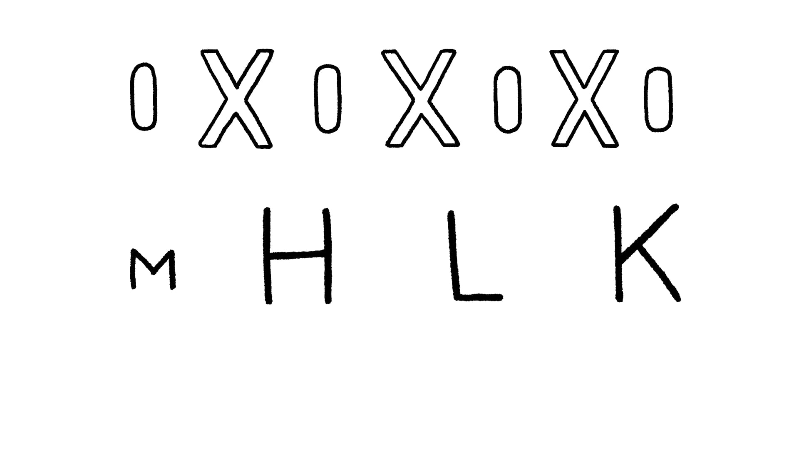
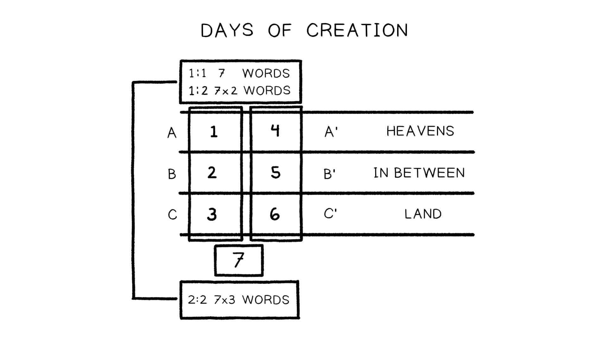

Ao coletar e arranjar as narrativas e os poemas, os autores bíblicos também criaram conexões de coordenação, ligando unidades por meio de palavras e temas repetidos. Os autores bíblicos eram mestres dessa técnica. As ferramentas mais fundamentais em seu repertório eram a repetição padronizada e a analogia, que realizavam usando os meios mais simples: a repetição estratégica de palavras-chave.As the biblical authors collected and arranged the narratives and poems, they also created coordinating connections by linking units together through repeated words and themes. The biblical authors were masters of this technique. The most fundamental tools in their repertoire were patterned repetition and analogy, which they accomplished using the simplest of means: strategic repetition of key words.
A repetição densa de uma palavra ou família de palavras pode sinalizar um tema central de uma unidade literária. Isso é conhecido como palavra-chave (lead word).Dense repetition of a word or word family can signal a core theme of a literary unit. These are known as lead words.
“Uma palavra-chave (alemão: leitwort) é uma palavra ou raiz que se repete significativamente em um texto ou grupo de textos, e, seguindo essas repetições, pode-se decifrar ou captar o sentido do texto ... A repetição pode não ser da mesma palavra exata, mas da raiz da palavra ... o que intensifica a ação dinâmica da repetição ... se você imaginar todo o texto estendido diante de si, pode sentir ondas indo e voltando entre as palavras-chave, acompanhando o ritmo do texto ... é um dos meios mais poderosos de transmitir sentido.”“A lead-word (German: leitwort) is a word or word-root that repeats significantly in a text or group of texts, and by following these repetitions, one is able to decipher or grasp a meaning of the text ... The repetition may not be of the same exact word, but of the word-root ... which intensifies the dynamic action of the repetition ... if you imagine the entire text stretched out before you, you can sense waves moving back and forth between key words, matching the rhythm of the text ... it is one of the most powerful means of conveying meaning.”
Buber, Martin (2012). Schriften zur Bibel. Gütersloher Verlagshaus. 1131.Buber, Martin (2012). Schriften zur Bibel. Gütersloher Verlagshaus. 1131.
O hebraico baseia-se em um sistema de raízes de três consoantes. Esta ilustração ajuda a mostrar como palavras relacionadas, visual e auditivamente óbvias no hebraico original, eram usadas para criar agrupamentos temáticos por repetição.Hebrew is based on a system of three-consonant root words. This illustration helps show how related words, visually and aurally obvious in the original Hebrew, would be used to create thematic groupings by repetition.
Essa frase é como um ritmo de tambor durante os dias um a seis, e estabelece a expectativa do leitor, de modo que a formulação diferente da sétima repetição de “muito bom” se destaca e soa climática.This phrase is like a drumbeat during days one through six, and it sets the reader’s expectation so that the different wording of the seventh repetition of “very good” stands out and feels climactic.
Em termos do retrato do caráter de Deus, essa repetição faz uma afirmação clara: Deus é o provedor e o avaliador do que é verdadeiramente bom. Em Gênesis 1, “bom” define os ambientes ordenados que tornam a vida possível (dias um a três), e define as criaturas abundantes que enchem os céus e a terra (dias quatro a seis).In terms of God’s character portrait, this repetition makes a clear claim: God is the provider and evaluator of what is truly good. In Genesis 1, “good” defines the ordered environments that make life possible (days one through three), and it defines the abundant creatures that fill the skies and the land (days four through six).
Gênesis 12:1-3 NAAGenesis 12:1-3 NASB
1Ora, disse o SENHOR a Abrão: “Sai da tua terra,Now the LORD said to Abram, e da tua parentela,“Go forth from your country, e da casa de teu pai,and from your relatives para a terra que te mostrarei;and from your father’s house, 2e far-te-ei uma grande nação,2 and I will make you a great nation, e abençoar-te-ei (וַאֲבָרְכְךָ),and I will bless you, e engrandecerei o teu nome;and make your name great; e tu serás uma bênção;and so you shall be a blessing; 3e abençoarei os que te abençoarem,3 and I will bless those who bless you, e amaldiçoarei aquele que te amaldiçoar;and the one who curses you I will curse. e em ti serão benditas todas as famílias da terra.”And in you all the families of the earth will be blessed.”

O que mais lhe chama a atenção sobre como a repetição ou a estrutura funcionam em Gênesis 1?What stands out to you about how repetition or structure works in Genesis 1?